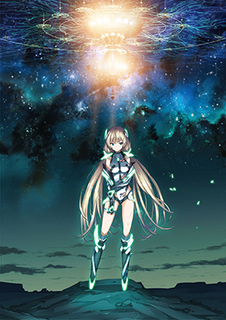
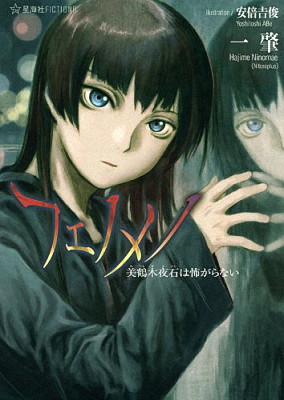

Home
Type Moon
月姬
Fate
Fate/Zero
Fate/Stay Night
Fate/Hollow Ataraxia
Fate/Prototype
Fate/Extra
Fate/Extra CCC
Fate/Strange Fake
Fate/Apocrypha
Fate/Kaleid Liner Prisma Illya
空の境界
魔法使の夜
Others
Take Moon
Fire Girl
月の珊瑚
钢の大地
宙の外
D.D.D
四月の魔女の部屋
Lord·艾尔梅罗二世案件簿
冰の花
2015年の時計塔
Study
Android
Web
设计模式
Sunrise
Gundam
境界線上のホライゾン
革命機ヴァルヴレイヴ
TouHou
Game
Music
Others


快递查询